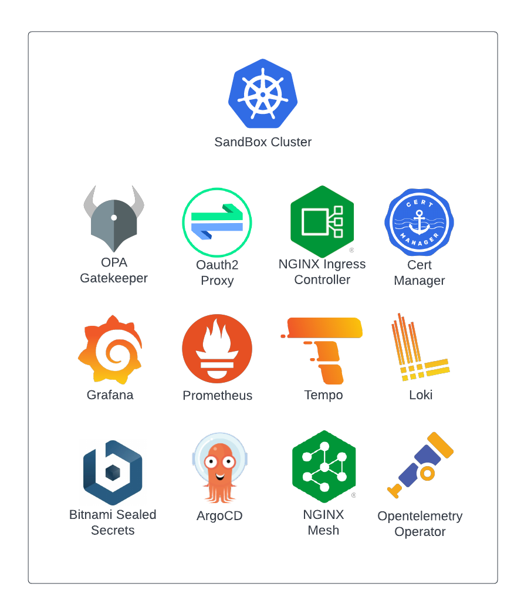

Sandbox Documentation
Background
The Sandbox project is an opinionated set of apps that can be applied to a Kubernetes Cluster to give it some of the common functionality you might expect to find in a "production-ready" cluster (e.g. observability, ingress, gitops tooling, key vault, service mesh, etc), without all of the "pesky" rigor and strict policy enforcement. In other words, a development and experimentation sandbox that lives somewhere between a vanilla k8s cluster and one you should actually run user facing service on.
Warning
To Be Clear: while many of the necessary components are installed with some configuration, it must be stressed that this is NOT intended to carry production traffic.
Quick Links
- Quick Start (Local install, partial feature set)
- Getting Started (Full feature set)
- Frequently Asked Questions
What's Included

A default Sandbox installation includes the following apps and services:
| App/Service | Description |
|---|---|
| ArgoCD | Provides "GitOps" functionality and handles installation of Sandbox services |
| Cert Manager | Provides automated certificate management |
| Grafana | Visualize and explore telemetry from cluster and applications |
| Loki | Backend for storage and retrieval of container logs. |
| NGINX Ingress Controller | Provides cluster ingress services via NGINX Inc Ingress |
| NGINX Mesh | Provides service mesh functionality |
| Oauth2 Proxy | Uses common identity providers for authentication to ingress resources |
| OPA Gatekeeper | Define and enforce policies on your K8S infrastructure |
| Opentelemetry Operator | Collect and forward metrics / logs / traces from cluster services |
| Prometheus Operator | Collect metrics from cluster and installed applications |
| Sealed Secrets | Secured secrets for k8s infrastructure |
| Tempo | Backend for storage and retreival of distributed tracing data. |
A default Sandbox installation includes the following capabilities "out of the box":
- Container ingress services via NGINX Ingress Controller.
- Automated Let's Encrypt SSL certificate generation for ingress services (NGINX Ingress + Cert Manager).
- Oauth2 Authentication with common identity providers for users accessing ingress services (NGINX Ingress + Oauth2 Proxy).
- GitOps based application deployments (ArgoCD).
- Service mesh capabilities (NGINX Mesh).
- On-board telemetry collection and visualization (Grafana, Prometheus, Opentelemetry, Loki, Tempo).
- Policy Definition and Enforcement with Open Policy Agent Gatekeeper.
- Secure Secret Management patterns with Bitnami Sealed Secrets.